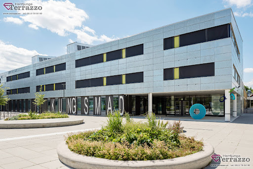

Mitt namn är Jonna jag bor i Hovmantorp och är snart 18 år. Jag går mitt tredje år på handelsprogrmmet på kungsmadskolan.Jag skulle beskriva mig själv en glad och rolig person. På fritiden jobbar jag inom handel i en glasshop i en liten håla som heter skruv.
Jag har inga specifika intressen men jag gillar att umgås med mina vänner speciellt noel och tess. Sen har jag alltid velat börja köra cross igen men det har aldrig blivit av men et är en barndomsdröm som ligger och väntar.
Jag går mitt tredje år på handels programmet. Där jobbar vi mycket med service och försäljning. När jag började gymnasiet gick jag frisör men det va inget för mig så jag bytta. Igentligen ville jag gå lastbil men jag kände inte för att ta bussen från hovmantorp till öjaby så jag vale att byta till handel då det är väldigt praktiaskt och man får en syn in i arbetslivet.
Mina förväntningar av kursen webbuveckling är att lära mig hur man skapar webbsidor. Jag är igentligen inte en teknisk och dator inriktad tjej men jag tänkte att jag ger det ett försök. Mina tankar om kursen är väldigt delade då jag tycker det är kul att skriva koder men det känns svårt och invecklat för mig som är så okunnig.
 kungsmadskolan